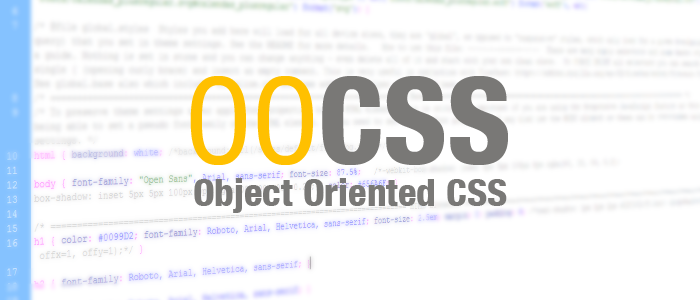
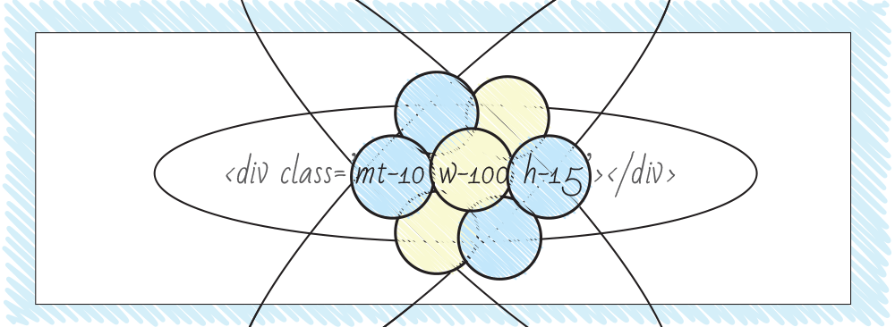

Пожалуй, самая популярная сейчас методология в мире. Название означает «Блок, элемент, модификатор».
Эти категории играют следующие роли в коде:
блоки могут использоваться в нескольких местах сайта;
элементы являются частью блока и не имеют функционального смысла вне блока;
модификаторы представляют собой свойства блока или элемента, которые меняют его внешний вид или поведение.
Из этих категорий строятся классы для непосредственного использования в CSS. При этом не следует использовать селекторы тэгов (это потенциально может помешать использовать блок/элемент в каком-то нестандартном месте на сайте, т.е. привязывает сущность к контексту); рекомендуется также избегать каскадных селекторов, т.к. получившийся класс сам по себе достаточно точно (специфично) выбирает соответствующий элемент.
Такой подход позволяет избавиться от непредсказуемых последствий каскада и изолирует отдельные модули друг от друга.
Для удобства используются разные разделители между блоком и элементом и между блоком/элементом и модификатором; при этом можно использовать любые разделители, однако они должны быть одинаковыми в рамках одного проекта.
А теперь о бочках меда и ложках дегтя:
Хорошо: изолированность модулей друг от друга и отсутствие непредсказуемых каскадов селекторов.
Плохо: не всегда длинные названия классов удобны для использования (для крупных проектов есть смысл использовать инструменты, автоматизирующие работу с БЭМ-разметкой).
Кстати, для написания кода в таком стиле раньше часто рекомендовали препроцессор Stylus, так как он позволяет писать код так:
.block {
&-element {...}
}
Сейчас так можно писать, используя как SASS, так и LESS.
И еще одно замечание — в оригинальной методологии БЭМ используются названия модификаторов, содержащие саму модифицируемую величину, например, button--sizeLarge. Сейчас в небольших проектах многие разработчики не указывают ее для лаконичности: button--large.
Рисунок 2 - Яндекс.БЭМ. Пример блока
OOCSS

Рисунок 3 - OOCSS
OOCSS означает объектно-ориентированный CSS (Object-Oriented CSS). В этот подход заложены две основные идеи:
Разделение структуры и оформления
Разделение контейнера и контента (содержимого)
Итак, «разделяй и властвуй». С помощью такой структуры разработчик получает общие классы, которые можно использовать в разных местах.
А теперь — две новости (как водится, хорошая и плохая):
Хорошая: уменьшение количества кода за счет повторного его использования (принцип DRY).
Плохая: достаточно сложная поддержка: при изменении стиля конкретного элемента скорее всего придется менять не только CSS (т.к. большинство классов общие), но и добавлять классы в разметку.
Кроме того, сам подход OOCSS предлагает не конкретные правила, а абстрактные рекомендации, поэтому метод достаточно сложен для применения на практике.
Зато, как это иногда случается, некоторые идеи OOCSS вдохновили авторов на создание своих, более конкретных, способов структурирования кода — своеобразных форков OOCSS.
SMACSS
SMACSS расшифровывается как «масштабируемая и модульная архитектура для CSS» (Scalable and Modular Architecture for CSS).
Основная цель подхода — уменьшение количества кода и на упрощение поддержки кода.
Итак, Джонатан предложил разделить стили на 5 частей (в порядке включения их в документ):
Base rules — базовые стили. Это стили основных элементов сайта — body, input, button, ul, ol и т.п. В этой секции используются в основном селекторы тэгов и атрибутов, классы — в исключительных случаях (например, если у вас стилизованные JavaScript’ом селекты);
Layout rules — стили макета. Здесь находятся стили глобальных элементов размеры шапки, футера, сайдбара и т.п. Джонатан предлагает использовать здесь id в селекторах, так как эти элементы не будут встречаться более 1 раза на странице. Однако автор статьи считает это плохой практикой (каждый раз, когда в стилях появляется id селектор, где-то в мире грустит котенок). Используйте классы и будет вам счастье.
Modules rules — стили модулей, то есть блоков, которые могут использоваться несколько раз на одной странице. Для классов модулей не рекомендуется использовать id и селекторы тэгов (для многократного использования и независимости от контекста соответственно).
State rules — стили состояния. В этом разделе прописываются различные состояния модулей и скелета сайта. Это единственный раздел, в котором допустимо использование ключевого слова «!important».
Theme rules — оформление. Здесь описываются стили оформлений, которые со временем, возможно, нужно будет заменить (так удобно делать, например, новогоднее оформление; для html-тем, выставленных на продажу такие стили позволяют переключать цветовую гамму и т.п.).
Также рекомендуется вводить неймспейсы для классов, принадлежащих к определенной группе, а также использовать отдельный неймспейс для классов, используемых в JavaScript.
Этот подход действительно позволяет упростить написание и поддержку кода и в последнее время привлекает достаточно большое количество разработчиков.
Рисунок 4 - SMACSS
Atomic CSS
Atomic CSS, редко также ACSS — атомарный CSS. В некотором роде этот подход представляет собой OOCSS, возведенный в абсолют.
При использовании такого подхода для каждого повторно используемого свойства должен быть сформирован отдельный класс. Пример: стиль «margin-top: 1px» предполагает создание класса «mt-1», стиль «width: 200px» создание класса «w-200».
Такой стиль позволяет минимизировать объем CSS-кода за счет повторного использования деклараций, а также сравнительно легко вводить изменения в модули, к примеру, при изменении технического задания.
Однако у этого подхода есть существенные недостатки! Вот они:
наименования классов представляют собой описательные названия свойств, не описывая семантическую сущность элемента, что иногда может усложнить разработку;
настройки отображения элементов переносятся непосредственно в HTML (это не то, для чего были придуманы таблицы стилей, не так ли?).
В связи с этими недостатками, подход был встречен существенным объемом критики. Тем не менее, подход может оказаться эффективным для очень больших проектов — кажется, Yahoo! вполне довольны использованием ACSS (ссылка на интересную презентацию того же Тьерри Коблентца).
Кроме того, атомарный CSS используется в различных фреймворках для задания корректирующих стилей элементов и в некоторых слоях других методологий.

Рисунок 5 - Atomic CSS
MCSS
MCSS — многослойный CSS (Multilayer CSS). Этот стиль написания кода, зародившийся в компании «Одноклассники», предлагает разделить стили на несколько частей, называемых слоями.
Нулевой слой или фундамент — здесь содержится код, отвечающий за сброс стилей браузера (reset.css/normalize.css);
Базовый слой — включает в себя стили многократно используемых на сайте элементов: кнопок, полей ввода для текста, подсказок и т.п.;
Проектный слой — включает в себя отдельные модули, а также т.н. «контекст» — модификации элементов в зависимости от браузера клиента, устройства, на котором просматривается сайт/приложение, роли пользователя и т.п.;
Косметический слой — в этом разделе находится код, написанный в стиле OOCSS, осуществляющий мелкие изменения в внешнем виде элементов. Здесь рекомендуется оставлять только стили, влияющие на внешний вид и не способные поломать верстку сайта — цвета, некоторые некритичные отступы.
Очень важна иерархия взаимодействия слоев:
Слой фундамента задает нейтральные стили и не влияет на другие слои.
Элементы базового слоя могут влиять только на классы своего же слоя. Пример: иконки на сайте могут иметь размеры 25x25, но иконки в кнопках — 16x16.
Элементы проектного слоя могут влиять на базовый и проектный слой. Примеры: иконки в форме логина имеют особый размер 20x20; модуль «Покупка» может включать в себя форму логина, стили которой несколько модифицированы.
Косметический слой оформлен в виде описательных OOCSS-классов («атомарные» классы) и не влияет на другой CSS-код, избирательно применяясь в разметке.
Рисунок 6 - MCSS
AMCSS
Название подхода означает «Модули атрибутов для CSS» (Attribute Modules for CSS). Это достаточно необычный подход, упоминания которого, тем не менее, все чаще встречаются в блогах гуру разработки.
Если обобщить, этот способ является несколько более человеко-читаемым представлением БЭМ-структуры. Давайте рассмотрим пример:
Такая цепочка классов не очень приятна для глаз, поэтому давайте сгруппируем эти значения по атрибутам.
Вот что получится:
<div button="large blue">Кнопка</div>
Во избежание коллизий имен неплохо бы добавить атрибутам неймспейсы, не так ли? Тогда код нашей кнопки примет следующий вид:
<div am-button="large blue">Кнопка</div>
Если вы используете валидатор для проверки кода на корректность, не забывайте также добавить приставку «data-» перед названием атрибута.
Для записи CSS-кода используется малоизвестный селектор «~=» (IE7+), который работает как атрибут класса: выбирает элементы, значения атрибутов которых содержат указанные слова, разделенные пробелами. Так, селектор вида a[class~=«link»][class~=«button»] аналогичен селектору a.class.button (даже по специфичности, так как специфичности селекторов по классу и по атрибуту равны друг другу!).
Соответственно, CSS-код
FUN означает «плоская иерархия селекторов, служебные стили, компоненты с неймспейсами» (Flat hierarchy of selectors, Utility styles, Name-spaced components). Ну или веселье =)
За каждой буквой названия стоит определенный принцип:
F, плоская иерархия селекторов: в стилях рекомендуется использовать классы для выбора элементов, не вкладывать селекторы (избегать каскада без необходимости), а также не использовать id (если вы читали раздел БЭМ, вспомните про котят);
U, служебные классы: поощряется создание служебных атомарных стилей для решения типовых задач верстки, например, w100 для «width: 100%» или fr для «float: right»;
N, компоненты с неймспейсами: Бен рекомендует добавлять неймспейсы для задания стилей элементов конкретных модулей; такой подход позволит избежать совпадений в названиях классов.
Некоторые разработчики отмечают, что код, написанный с использованием этих принципов достаточно удобно писать и поддерживать; в некотором роде автор взял лучшее от БЭМ и SMACSS и изложил эти техники в простой и лаконичной форме.
Такой подход накладывает достаточно мало требований по структуре кода и проекта, он лишь устанавливает предпочтительную форму записи селекторов и способ их использования в разметке. Но в небольших проектах этих правил может быть вполне достаточно для создания качественного кода.